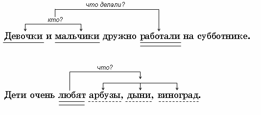
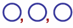
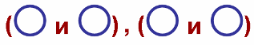
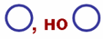
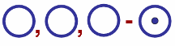

ягод,
цветов
|
много | чего? | грибов, ягод, цветов |
|
они | какие? | вкусные, красивые, полезные |
|
одуванчики, ромашки, колокольчики |
что делают? | украшают |
 |
Однородными называются члены предложения, которые обычно отвечают на один и тот же вопрос и связаны с одним и тем же словом. Однородными могут быть все члены предложения. |
 |
 |
|
Бессоюзная связь передаётся с помощью интонации перечисления. Союзная связь однородных членов предложения осуществляется с помощью союзов: а, и, но, или. |
|
Мы с ним говорили о сенокосе, о стадах, о степи. Абай и А.С. Пушкин – великие писатели классической литературы. Этот путь короткий, но очень трудный. Дождь прошёл, а землю не напоил. Дети любят ходить в лес за грибами или за ягодами. |
| Запятая ставится | Запятая не ставится |
| Два и более однородных членов без союзов.  Кот увидел Каштанку, вскочил, вытянул спину, задрал хвост, взъерошил шерсть. (А.П. Чехов) |
Однородные члены с одним союзом: и, или. Каштанкою овладели отчаяние и ужас. (А.П. Чехов) |
| Однородные члены с повторяющимися союзами: и
– и, или – или. Каштанкою овладели и отчаяние, и ужас. (А.П. Чехов) |
Внутри групп однородных членов, соединённых попарно.  Мы собирали травы и ягоды, грибы и орехи. |
| Между однородными членами с союзами а, но.  Каштанка лизнула незнакомцу руку, но заскулила ещё сильнее. (А.П. Чехов) |
В цельных выражениях: и то и сё, ни то ни сё, ни свет
ни заря, и так и сяк, ни рыба ни мясо. Мальчики встали ни свет ни заря (очень рано) и пошли ловить рыбу. |
|
После обобщающего слова перед однородными членами ставится двоеточие. Если обобщающее слово стоит после однородных членов предложения – перед ним ставится тире.  |
|
У нас на даче растут разные овощи: капуста, огурцы,
морковь, лук, картофель. Люди, птицы, звери, рыбы - жители планеты Земля. |